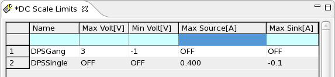

DC Scale Limits editor
DC Scale Limits is a safety feature. If the voltage or current is too high or too low, an error message is triggered.
Any limit settings done here apply for DC Scale cards only.
The DC Scale Limits editor consists of the following cells:
Name |
A descriptive name for the DUT pin. |
Max Volt[V] |
The upper voltage limit |
Min Volt[V] |
The lower voltage limit |
Max Source[A] |
The upper current limit. |
Min Source[A] |
The lower current limit. |
For the appropriate limits see the specifications for DC Scale Device Power Supplies.
Example

Functional changes
- Introduced in SmarTest 7.2.1